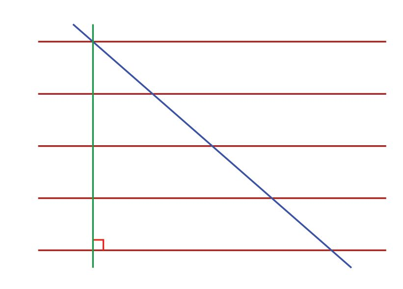
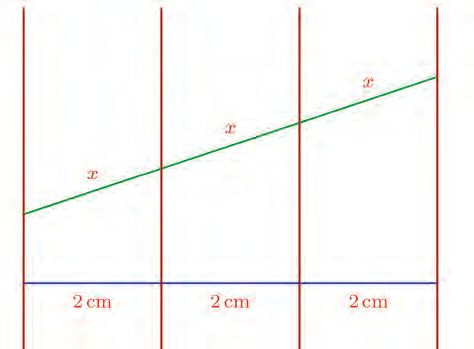
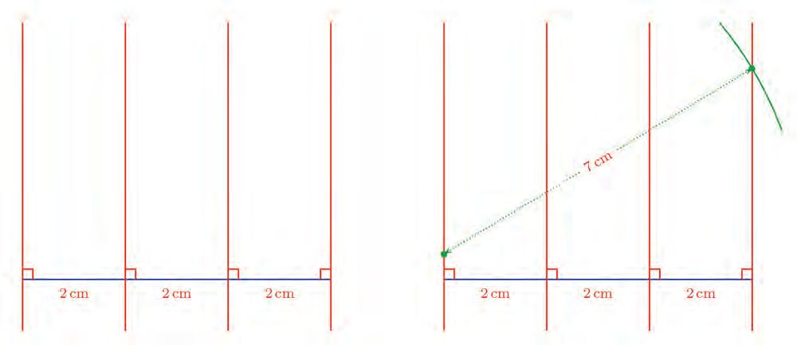
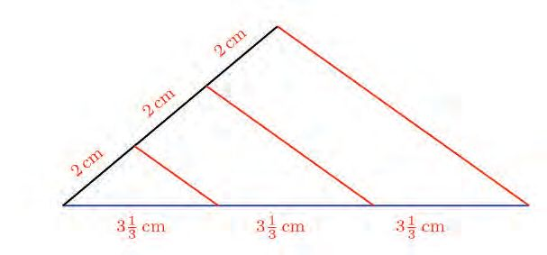

Polynomials
Algebra of measurements
A rectangle of sides 2 centimetres and 3 centimetres is enlarged to a larger rectangle, by
increasing each side by 1 centimetre:
What is the perimeter of the new rectangle?
The lengths of the sides of this rectangle are 3 centimetres and 4 centimetres so that
perimeter is 2 × (4 +3) = 14 centimetres.
We can think about this in another way. The perimeter of the original rectangle was
2 × (3+ 2) = 10 centimetres. Each side is increased by 1 centimetre, which means an
increase of 4 centimetres in all. So the perimeter of the new rectangle is 10 + 4 = 14
centimetres.
What if the sides are extended by 2 centimetres? If we use the second method, then the
total increase in length is 4 × 2 = 8 centimetres, so that the new perimeter is 10 + 8 = 18
centimetres.
This makes the computation easier, right? If the extension is 2 12 centimetres, then the
new perimeter is
c 4 # 2 1 m + 10 = 20 cm
2
In general, whatever be the extension of each sides, 4 times that added to 10 gives the
new perimeter.
177
Page 34
Figure fig_ch03_p034_01 (Page 34)
Mathematics - Standard IX
Let's write this using algebra. We denote the extension of each side as x centimetres and
the new perimeter as p centimetres. Then we can write
p = (4 × x) + 10 = 4x + 10
Now we can quickly compute the perimeters for various extensions:
If the extension is 3 centimetres, then the new perimeter is
(4 × 3) + 10 = 22 centimetres
If the extension is 3 12 centimetres, then the new perimeter is
c 4 # 3 1 m + 10 = 24 centimetres
2
If the extension is 3 34 centimetres, then the new perimeter is
c 4 # 3 3 m + 10 = 25 centimetres
4
Using algebra, these can be shortened:
If x = 3,
then p = 22
If x = 3 12 , then p = 24
If x = 3 34 , then p = 25
There is a way to shorten these still further:
p(3) = 22
p c 3 12 m = 24
pc 3 34 m = 25
In general, we can write
p(x) = 4x + 10
Let's look at this notation once again. First we write our computation in ordinary
language:
If the sides of a rectangle of sides two centimetres and three centimetres are all
extended by the same length to make a larger rectangle, then the perimeter of this
rectangle is ten added to four times the extension. For example if the sides are
extended by 1 12 centimetres, then the perimeter becomes 16 centimetres.
Next we write this in shorthand, using algebra:
If the sides of a rectangle of sides 2 centimetres and 3 centimetres are all extended
by x centimetres to make a larger rectangle, and the perimeter of the larger rectangle
is p centimetres, then p = 4x + 10. For example, if x = 1 12 , then p = 16.
In this, p changes according to the change in x. To make this dependence clear, we write
p(x) instead of just p. Then we can change the above statement like this:
178
Page 35
Figure fig_ch03_p035_01 (Page 35)

Figure fig_ch03_p035_02 (Page 35)
Polynomials
If the sides of a rectangle of sides 2 centimetres and 3 centimetres are all extended
by x centimetres to make a larger rectangle, and the perimeter of the larger rectangle
is p(x) centimetres, then p(x) = 4x + 10. For example, p c1 12 m = 16
As another example, let's see how the area changes in the same setup. Instead of
computing areas for various extensions as before, let's move straight to algebra, taking
the extension of sides as x centimetres:
From the pictures above, we can see that the new area is
6 + 2x + 3x + x2 = 6 + 5x + x2
We can do this using only algebra without any pictures:
(3 + x) (2 + x) = 6 + 3x + 2x + x2 = 6 + 5x + x2
(The lesson, Multiplication Identities)
In algebraic expressions, we usually write the letters first. So, the above equation can
be written
(x + 3) (x + 2) = x2 + 5x + 6
As in the case of the perimeter problem, if the area got by extending each side by x
centimetres is denoted a(x) square centimetres, then we have
a(x) = x2 + 5x + 6
Using this, we can compute for example
a(1) = 12 + (5 × 1) + 6 = 1 + 5 + 6 = 12
a c1 12 m = c1 12 m + c5 # 1 12 m + 6 = 2 14 + 7 12 + 6 = 15 34
a(2) = 22 + (5 × 2) + 6 = 4 + 10 + 6 = 20
2
And these can be written in ordinary language like this:
If the extension is 1 centimetre, then the new area is 12 square centimetres
If the extension is 1 12 centimetres, then the new area is 15 34 square centimetres
If the extension is 2 centimetres, then the new area is 20 square centimetres
179
Page 36
Figure fig_ch03_p036_01 (Page 36)

Figure fig_ch03_p036_02 (Page 36)

Figure fig_ch03_p036_03 (Page 36)
Mathematics - Standard IX
As another example, let's see how the volume of a rectangular block of edges 1
centimetre, 2 centimetres and 3 centimetres change when it is expanded to a larger block
by extending all edges by the same length.
If the extension is denoted as x centimetres, then the volume of larger block is
(x + 1)(x + 2)(x + 3) cubic centimetres. To compute this product, we first write
(x + 2) (x + 3) = x2 + 5x + 6
as seen earlier. Next this must be multiplied by x + 1. For that we must multiply each
number in the first sum by each number in he second sum and add:
(x + 1)(x2 + 5x + 6) = (x × (x2 + 5x + 6)) + (1 × (x2 + 5x + 6))
= (x3 + 5x2 + 6x) + (x2 + 5x + 6) = x3 + 6x2 + 11x + 6
We write this in detail:
If the sides of a rectangular block of edges 1 centimetre, 2 centimetres and 3
centimetres are all extended by x centimetres to make a larger rectangular block, and
the volume of the larger block is v(x) cubic centimetres, then v(x) = x3 + 6x2 + 11x + 6.
(1) In all rectangles with one side 1 centimetre less than the other, denote the
length of the shorter side as x centimetres
(i) Denote their perimeters as p(x) centimetres and write the relation
between x and p(x) as an equation
(ii) Denote their areas as a(x) square centimetres and write the relation
between x and a(x) as an equation
(iii) Compute p(1), p(2), p(3), p(4), p(5). Do you see any pattern?
(iv) Compute a(1), a(2), a(3), a(4), a(5). Do you see any pattern?
(2) From the four corners of a rectangle, small squares of the same size are cut off
and the tabs are raised up to make a box as in the picture below:
180
Page 37
Figure fig_ch03_p037_01 (Page 37)
Polynomials
(i) Denote the length of the sides of the squares as x centimetres and write the
the lengths of the three edges of the box in terms of x
(ii) Denote the volume of the box as v(x) cubic centimetres and write the relation
between x and v(x) as an equation
(iii) Compute v c 12 m , v(1) and v c1 12 m
(3) Consider all rectangles that can be made with a rope of length 1 metre. Denote
the length of one side as x centimetres and the area enclosed by the rope as a(x)
square centimetres.
(i) Write the relation between x and a(x) as an equation
(ii) Why are a(10) and a(40) the same number?
(iii) To get the same number as a(x) when x is taken as two different numbers,
what should be the relation between the numbers?
Special expressions
We have seen how some relations between measurements can be written as algebraic
equations. These can be seen as relations between just numbers also. For example, in
our first problem on rectangles, we wrote the relation between an extension of the sides
and the new perimeter as
p(x) = 4x + 10
This can seen as the operation of multiplying a number by 4 and adding 10, beyond
computation of perimeters
Let's have a look at the other relations we discussed earlier:
•
a(x) = x2 + 5x + 6
•
v(x) = x3 + 6x2 + 11x + 6
If we look at them as operations on numbers, we can detect some common features.
In all these, the only operations done are multiplying powers of the number x by fixed
numbers and adding these products; and adding a fixed number. Algebraic expressions
involving only these operations are called polynomials.
There are instances where operations other than these are done on measurements. For
example, let's look at the computation of the diagonals of a rectangle with one side
1 centimetre longer than the other
181
Page 38
Figure fig_ch03_p038_01 (Page 38)

Figure fig_ch03_p038_02 (Page 38)
Mathematics - Standard IX
If we denote the length of the shorter side as x centimetres, then the length of the diagonal
in centimetres is
x2 + (x + 1) 2 =
2x2 + 2x + 1
This involves the square root of varying numbers and so this is not a polynomial, by
definition
Now look at this picture:
It shows a rectangle attached to the hypotenuse of an isosceles right triangle. What is its
area?
The area of the triangle is easily seen to be 8 square centimetres. The length of the
longer side of the rectangle is the hypotenuse of the isosceles right triangle and so is 4 2
centimetres, as seen in the lesson New Numbers. The area of the rectangle is thus 4 2
square centimeters.
The total area of the figure is 8 + 4 2 square centimetres
What if the length of the perpendicular sides of the triangle is some other number? If we
denote this number as x, then the area of the figure is the number
1 2
2x +
2x
This uses the square root of 2; but the operations on the varying number x involves
only squaring and multiplication by the fixed numbers 12 and 2 . So, this expression is
indeed a polynomial.
Let's look at another example. Consider all rectangles of area 25 square centimetres. If
we denote the length in centimetres of a side of such a rectangle as x, then the perimeter
of the rectangle in centimetres is
2x + 50
x
Since this expression involves the operation taking the reciprocal of the varying number
x, it is not a polynomial.
A polynomial involves powers of a varying number. The largest exponent occurring like
this is called the degree of the polynomial.
Look at some of the polynomials we have seen:
p(x) = 4x + 10
a(x) = x2 + 5x + 6
v(x) = x3 + 6x2 + 11x + 6
In this list, the degree of the first polynomial is 1, the degree of the second is 2 and the
degree of the third is 3
Instead of saying, "polynomial of first degree", "polynomial of second degree" and so
on, we can simply say, "first degree polynomial", "second degree polynomial" and so on
We can write the general form of polynomials, based on their degrees:
First degree polynomial : ax + b
Second degree polynomial : ax2 + bx + c
Third degree polynomial : ax3 + bx2 + cx + d
In these, a, b, c, d denote fixed numbers; thus when we take different numbers as x in
such a polynomial, these numbers are not changed. They are called the coefficients of
the corresponding powers. They can be any real numbers.
(1) In each of the problems below, check whether the relation between the
specified measurements is a polynomial. Give reasons for your assertions.
(i) The relation between the length of the sides of a square park and the area
of a 1 metre wide path around it.
(ii) The relation between the amount of acid added to a mixture of 3 litres
of acid and 7 litres of water, and the change in the percent of acid in the
mixture
(iii) Two poles of heights 3 metres and 4 metres stand 5 metres apart. A rope
is to be stretched from the top of one post to some point on the ground
and then stretched to the top of the other pole:
The distance from the foot of one pole to the point on the ground where the
rope is fixed, and the total length of the rope.
183
Page 40
Figure fig_ch03_p040_01 (Page 40)
Mathematics - Standard IX
(2) Write each of the following operations as an algebraic expression. Check which
of them are polynomials, giving reasons
(i) Sum of a number and its reciprocal
(ii) Sum of a number and its square root
(iii) The product of the sum of a number and its square root, and the difference
of the square root and the number
(3) For each of the polynomial p(x) given below, compute p(1) and p(10)
(i) p(x) = 2x + 5
(ii) p(x) = 3x2 + 6x + 1
(iii) p(x) = 4x3 + 2x2 + 3x + 7
(4) For each of the polynomial p(x) given below, compute p(0), p(1) and p(−1)
(i) p(x) = 3x + 5